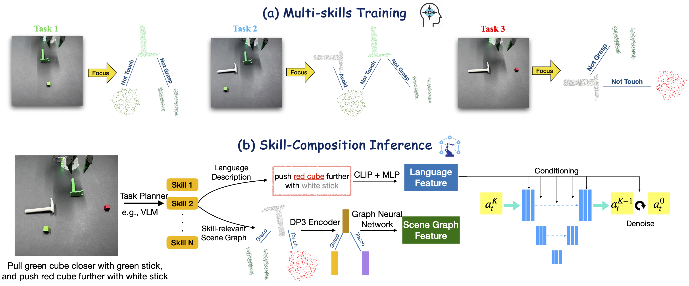

A key requirement for generalist robots is compositional generalization—the ability to combine atomic skills to solve complex, long-horizon tasks. While prior work has primarily focused on synthesizing a planner that sequences pre-learned skills, robust execution of the individual skills themselves remains challenging, as visuomotor policies often fail under distribution shifts induced by scene composition. To address this, we introduce a scene graph-based representation that focuses on task-relevant objects and relations, thereby mitigating sensitivity to irrelevant variation. Building on this idea, we develop a scene-graph skill learning framework that integrates graph neural networks with diffusion-based imitation learning, and further combine “focused” scene-graph skills with a vision-language model (VLM) based task planner. Experiments in both simulation and real-world manipulation tasks demonstrate substantially higher success rates than state-of-the-art baselines, highlighting improved robustness and compositional generalization in long-horizon tasks.
We propose a scene graph-based framework for skill composition in robot learning. Our method improves compositional generalization for long-horizon robotic manipulation by focusing on task-relevant object relations. The framework integrates graph neural networks, diffusion policy, and vision-language planning for robust real-world deployment.

Real-world robot manipulation: tool-usage task executed via scene graph-based atomic skills and skill composition for long-horizon generalization.
Real-world robot vegetable picking demonstrating compositional generalization: scene graph representations focus on task-relevant objects and relations for robust execution.
Simulation: cube out-and-in manipulation task showing scene graph-based atomic skills composed into a multi-step long-horizon policy.
Simulation: sort-by-color task highlighting skill composition under distribution shift, with object-relation reasoning in a scene graph.
Simulation: block stacking (long-horizon) demonstrating compositional robot learning with diffusion-based imitation learning and graph neural networks.
Simulation: tools-usage task illustrating scene graph-based skill learning and reliable execution when composing multiple atomic manipulation skills.
Simulation: obstacle avoidance with focused scene graphs, improving robustness and compositional generalization for robotic manipulation.